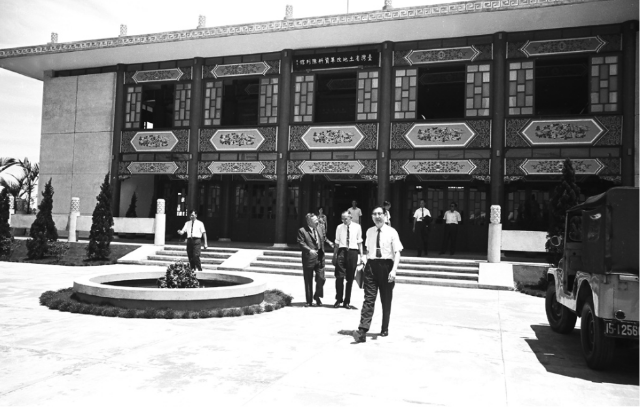
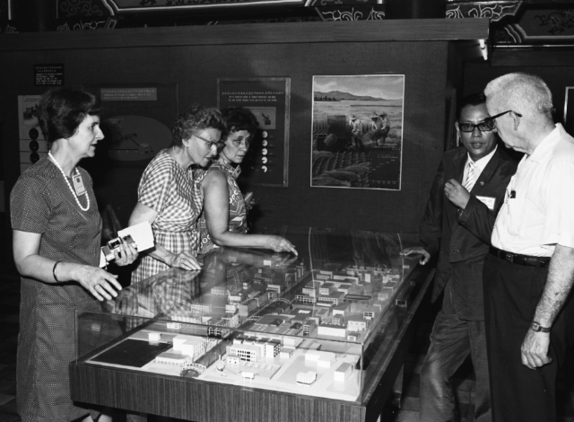

詳細說明
▲ 臺灣土地改革陳列館107年6月公告為歷史建築
本館簡介
Introduction
臺灣地區地狹人稠，光復初期，農村凋敝，百廢待舉，幸賴政府先後推行公地放租、耕地三七五減租、公地放領及實施耕者有其田、平均地權等一連串土地改革措施、促進農業生產，改善農民生活繁榮農村經濟，奠定臺灣省工業發展基礎，創造舉世稱羨經濟奇蹟。
本館簡介
Introduction
▲ 臺灣土地改革陳列館107年6月公告為歷史建築
臺灣地區地狹人稠，光復初期，農村凋敝，百廢待舉，幸賴政府先後推行公地放租、耕地三七五減租、公地放領及實施耕者有其田、平均地權等一連串土地改革措施、促進農業生產，改善農民生活繁榮農村經濟，奠定臺灣省工業發展基礎，創造舉世稱羨經濟奇蹟。
民國40年時任臺灣省政府民政廳地政局沈局長時可，為將當時農地改革成效作系統陳列，借用桃園地政事務所倉庫做為展示場所，當時吸引各國政要及專家學者等前來參觀。

詳細說明
56年6月由中美經濟學人共同舉辦的「臺灣經濟發展會議」代表，參觀臺灣土地改革資料陳列館。(外交部提供)

詳細說明
58年國際週協會亞洲問題考察團，共計46人來臺，參訪臺灣土地改革陳列館。(外交部提供)
54年臺灣省政府撥款於現址動工興建，翌年9月完工，命名為「臺灣土地改革資料陳列館」，其後更名為「臺灣土地改革陳列館」。 本館展示內容初期係以簡明圖表、照片及文字方式來說明早期土地改革情形。臺灣省政府於70年進行局部整修。
87年再度由臺灣省政府編列預算，全面整修陳列館及進行展館資料更新等，作為臺灣土地改革資料之重要展示場所，見證臺灣土地改革成果並宣揚至國際之歷史意義，經桃園市政府於107年6月公告為歷史建築。
詳細說明
民國52年6月泰國國王哈瑪九世蒲美蓬(左三)，在副總統陳誠(左一)陪同下，參觀我國土地改革成果展。(外交部提供)